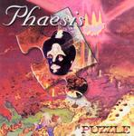

Home Artist links Label link

Phaesis - Puzzle
| Artist: | Phaesis |
| Title: | Puzzle |
| Label: | Musea Parallele FGBG 3047 |
| Length(s): | 49 minutes |
| Year(s) of release: | 2005 |
| Month of review: | [03/2006] |
Line up
Hugues Masson - drums
Gautier Lombart - keys
Eric Herbillon - bass, vocals
Dominique Vassart - guitars, guitar synth
Tracks
| 1) | Ouverture | 0.40
|
| 2) | Liberte | 4.08
|
| 3) | Animalite | 4.15
|
| 4) | Rubens Regina | 5.35
|
| 5) | Aura | 4.07
|
| 6) | Speedoux | 5.10
|
| 7) | Ravsody | 5.20
|
| 8) | Notre Monde | 5.23
|
| 9) | Communication | 6.36
|
| 10) | Passage | 1.54
|
| 11) | Oriens Exatto | 6.19
|
Summary
The music
This French psychedelic/progressive collective was founded in 1982 and releases its fourth album with this. Considering the amount of history, and with that likely enough experience, it's remarkable how unstructured, unhinged almost, the majority of compositions are. Apart from that the vocals more often than not are off key (to the point where I find it hard to concentrate on writing this review). Despite not fully remembering the band's first two releases, I did feel they were better than this one. Sure, there is ample fun in playing (or it appears so), but that cannot hide the fact that musically this album simply is not up to par.
The instrumental tracks tend to sound a bit better, since the vocals are the most important problem. But these instrumentals aren't without faults: the use of instruments, as well as the musical variety fail to display a musical direction. I still consider it a blessing in disguise that the majority of the album's tracks are instrumental, making it bearable. By the way, what I thought was probably the best bit of the album was the instrumental section in Notre Monde, which came dangerously close to a latter day Floyd track (probably off Momentary Lapse).
Conclusion
Granted: beauty is in the eye of the beholder (or beharker). I'm not one to look for Dream Theater like instrumental control. However, I do feel that a certain minimum level of both compositional skills and instrumental control should be exhibited in music to make it worthwhile enough for considerations of taste to come in. The joie de vivre that this band emits might be endearing (to a degree), but that is not enough to bring this to a level that would justify considering an acquisition.
© Roberto Lambooy